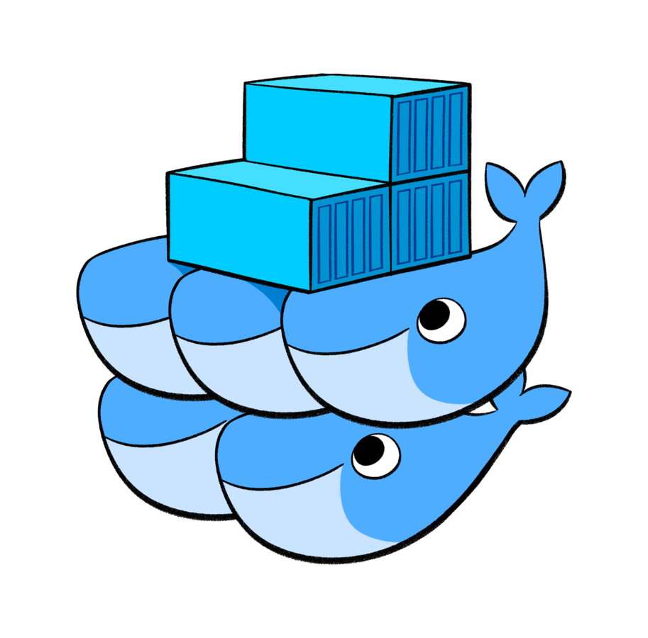

Bonus Inception

Web estática en Docker para el proyecto Inception
Características
- Contenedor con Nginx
- Contenido estático
- Red Docker privada
- Solo lectura
Tecnologías
- Docker / Docker Compose
- Nginx
- HTML/CSS
Despliegue
- Build imagen
- Configurar volúmenes
- Levantar con Compose
- Activar proxy
- Probar servicio